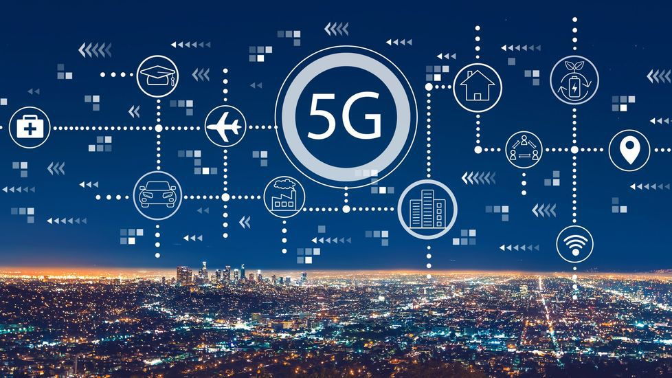

Mientras que las generaciones anteriores de tecnología celular (como 4G LTE) apuntaban a garantizar la conectividad, la tecnología 5G lleva la conectividad al siguiente nivel al ofrecer experiencias conectadas de la nube a los clientes. Las redes 5G están virtualizadas, se ejecutan por medio de un software y aprovechan las tecnologías en la nube. La red 5G también simplificará la movilidad, con capacidades de roaming abierto sin inconvenientes entre el celular y el acceso Wi-Fi. Los usuarios móviles pueden permanecer conectados mientras se desplazan por conexiones inalámbricas exteriores y redes inalámbricas dentro de las instalaciones sin la intervención del usuario o la necesidad de tener que volver a autenticarse. El nuevo estándar inalámbrico WiFi 6 (conocido también como 802.11ax) comparte rasgos con la tecnología 5G, incluido un mejor rendimiento. Las radios Wi-Fi 6 pueden colocarse donde las necesitan los usuarios para ofrecer una mejor cobertura geográfica y un menor costo. Detrás de las radios Wi-Fi 6 hay una red basada en software con automatización avanzada. La tecnología 5G debería mejorar la conectividad en áreas rurales desatendidas y en ciudades donde la demanda puede superar la capacidad actual de la tecnología 4G. Las nuevas redes 5G también contarán con una arquitectura densa de acceso distribuido y moverán el procesamiento de datos más cerca del perímetro y los usuarios para habilitar un procesamiento de datos más rápido..
